CritICL：从小语言模型失败模式实现推理时弱到强泛化
CritICL 的英文原题是 CritICL: Inference-Time Weak-to-Strong Generalization from Small Language Model Failure Modes。论文由 Yufan Wu、Yinghui He、Zhengyi Hu、Lang Wei、Ruichen Li、Qifan Yang 和 Ting Zhu 完成，第一作者主机构是俄亥俄州立大学，合作机构包括普林斯顿大学。论文于 2026 年 8 月 27 日提交至 arXiv，PDF 标明为 COLM 2026 会议论文。本笔记只保留一个论文入口：arXiv 论文页；官方代码仓库 已从 arXiv 页面链接并打开核验。它要做的事并非训练一个新的强模型，而是把弱模型经常如何做错转换成一个可复用的评论库，在推理时为强模型选择更“对症”的上下文示例。
现有推理时扩展通常要反复采样、自我修正或调用外部验证器，以更多生成次数换取正确率；而弱模型错误中可复用的结构性失败模式，尚未被有效转化为强模型的低成本推理时指导。
1. 背景和问题
大模型的推理时扩展大致有三条常见路径。第一条是对同一问题采样多条推理轨迹，再以多数投票得到自一致答案；第二条是让模型生成、批评、重写，将自我反思叠代数轮；第三条是另请判别模型或验证器从多个候选中选答案。这些路径的共同点是，性能改善与每个新请求的额外计算紧密绑定。多条候选不仅增加延迟和输出 token，外部判别还可能需要更强、更贵的模型。如果系统每天面对大量请求，单题计算的线性放大会成为部署瓶颈。
弱到强泛化提供了另一种信号来源：弱模型的行为。但如果每条新输入都先让弱模型在线产生中间指导，系统仍需要额外调用，且弱模型的当次答案未必足以引导强模型。CritICL 的观察更具体：不要把弱模型的错误只看成负样本，而要区分“答案错了”与“为什么会错”。错误公式应用、题意误解、跳过逻辑步骤、边界条件分析不足等失败类型，可能在同一模型家族的不同尺度中保持相似的相对频率，即使强模型的总错误数更少。因此，小模型可能不是提供正确答案的老师，而是提供错误地图的探针。
这里的“弱到强”也不同于常见的训练式 weak supervision。作者没有用小模型标签去微调大模型，也没有假设弱模型能给出可靠正解；强模型参数从头到尾保持冻结。被迁移的是一种比答案更抽象的统计结构：同一家族的小模型在哪些推理环节更容易失败，以及每类失败应如何被指出和纠正。若这种结构确实跨尺度稳定，就可以在便宜模型上离线收集错误，再把经过整理的批评示例放入昂贵模型的上下文。这样，弱模型之“弱”不再只是噪声来源，反而使它产生足够多、足够多样的失败案例，便于形成覆盖面较广的错误类型库。
这个假设包含两层需要分别验证的命题。第一层是描述性的：弱模型与强模型的失败类别分布是否真的相似，聚合多个小模型是否比依赖单个小模型更稳；论文用家族内分布图、秩相关、Top-10 重合与 Jensen-Shannon 距离回答。第二层是干预性的：即便两者分布相关，把相应错误与 critique 放进 prompt 是否会让强模型少犯错；论文通过随机、固定、语义检索、乱序标签和只放错误回答等消融隔离这部分效果。只有相关性和干预效果同时出现，CritBank 才不仅是事后描述工具，而能成为推理时组件。本文后续实验基本围绕这两层证据展开。
这样一来，研究问题就从“怎样多生成几次”改写为三个子问题。首先，如何将不同弱模型在大量问题上的错误压缩成结构化、可索引的失败模式，而不是一堆无法复用的自由文本？其次，面向一个新问题，检索标准应当是题面语义相似，还是可能重演的推理错误相似？最后，如果要尽量减少在线成本，系统是否能不为每个输入额外预测风险，而是直接利用同家族共享的失败分布？CritICL 的动态版和静态版分别回答后两种在线约束。
论文的价值不在于又发明一种 few-shot 排版，而在于改变示例的语义单元。普通 ICL 常放入正确的问题-答案对，教模型模仿解题路径；CritICL 放入的是问题、错误回答和针对错误的 critique，要求模型在下一题中主动避开同类陷阱。它对推荐/搜索系统的潜在启发也在此：线上排序错误未必要按物品相似度回放，也可以按“误判类型”构建反例库，例如长期兴趣覆盖短期意图、稀缺特征被热门特征淹没或业务约束在重排中丢失。但这种迁移只是研究启发，本文没有提供推荐系统线上实验。更严格地说，论文验证的是离线可判分推理任务中的上下文干预；它没有证明失败标签对应模型内部因果机制，也没有证明评论库在用户分布和模型版本持续变化的线上环境中无需更新。
2. 方法
2.1 CritBank：把弱模型错误整理成可检索的评论库
CritBank 的输入是问题集 $\mathcal{Q}$ 和同一家族中的弱模型集 $M$。对每个问题-模型对，作者使用 CoT prompt 生成五条带中间推理的回答：
符号解释：$q$ 是问题，$m$ 是一个弱模型，$r_{q,m}^{(i)}$ 是第 $i$ 次生成的完整推理和答案。五次生成是离线数据采集成本，不是 CritICL-static 在线回答每道题时的重复采样。全部问题与模型的响应被合并为：
符号解释：$\mathcal{Q}$ 遍历所有训练问题，$M$ 遍历多个弱模型，并集表明 CritBank 会聚合不同尺度的失败，而非只学一个小模型的偏差。正确性函数 $\phi(q,r)\in\{0,1\}$ 将响应分成不相交的两部分：
符号解释：$R_{\mathrm{incorrect}}$ 只包含 $\phi(q,r)=0$ 的回答，它们才进入失败模式分析。这一筛选很关键：系统不是用弱模型伪造正解教强模型，而是保留真实错误作为“不该怎么做”的证据。
对每个错误回答，作者调用前沿 LLM 生成最多五个候选失败标签，通过聚类合并语义重复的标签，并生成指出错误位置与修正方向的自然语言评论。默认标注器是 GPT-4o-mini。设 $\mathcal{C}(q,r)$ 为评论函数，$\mathcal{L}(q,r)$ 为一个错误回答所对应的失败标签集，则最终数据结构为：
符号解释：每个四元组保留原问题 $q$、错误推理 $r$、失败模式 $l$ 和评论 $\mathcal{C}(q,r)$。一个回答可以命中多个标签，因此数据库能按错误类型反向索引。为此定义：
符号解释：$\mathcal{L}^{-1}(l)$ 从某一失败模式 $l$ 返回所有相关的问题-错误回答对，再通过 $\mathcal{C}$ 取得评论。CritBank 的最小可复用单元不是“一道相似题的正确答案”，而是“一个可迁移的失败类型与对应修正评论”。
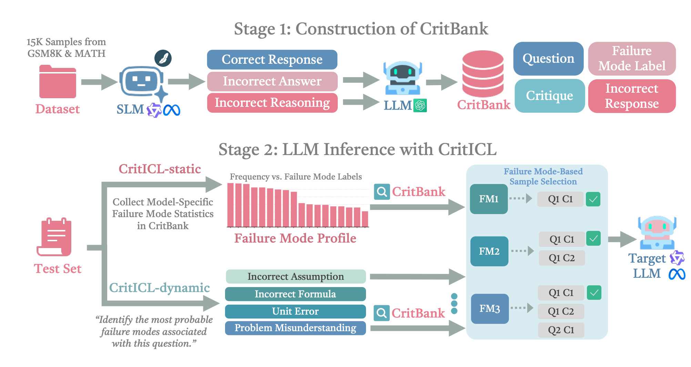
Figure 1 的上半部是离线阶段：GSM8K 与 MATH 的 1.5 万个训练问题先由多个 SLM 产生正确/错误回答和错误推理，再由前沿 LLM 给错误附上 failure-mode label 和 critique，最后写入 CritBank。下半部把两条在线路径放在同一张图里：static 从历史失败频率构造家族 profile，dynamic 对当前问题预测可能失败类型，两者都用同一个 failure-mode-based sample selection 从库中取出错误回答 Q、评论 C，然后与新问题一起交给目标 LLM。图中没有任何参数更新箭头，这准确表明它是检索增强的推理时方法。但离线阶段并非免费：五次 SLM 响应和 GPT-4o-mini 标注仍是被转移、摊销的成本，不能从总体实施费用中抹去。
2.2 按失败模式对齐的候选构造与去冗余检索
给定目标失败模式集 $S\subseteq\mathcal{F}$，检索先从 CritBank 中取出标签与 $S$ 有交集的错误案例：
符号解释：$\mathcal{F}$ 是全部失败模式空间，$S$ 是本次想覆盖的子集，$\mathcal{D}(S)$ 是候选评论示例。条件是失败标签相交，而不是问题向量相似，因此一道几何题中的“遗漏边界条件”可以为一道代数题提供提醒，只要两者的错误机制一致。候选的匹配分数为：
符号解释：$w(l)$ 是失败模式的可选权重，无权重时 $w(l)=1$，分数就退化为 $|\mathcal{L}(q,r)\cap S|$，即一个案例命中了多少个目标风险。算法先按分数排序，再贪心选择 top-$K$；当高分案例反复覆盖同一个失败类别时，优先纳入能引入新目标类别的案例，最后才用未使用的最高分候选补足预算。这个去冗余步骤表明作者不是一味追求标签命中次数，而是在有限上下文中提高错误类型覆盖。
该设计也有明确的脆弱点。一旦失败标签被分得过粗，检索得到的评论会失去针对性；若标签过细，每个类别的候选池又会稀疏、噪声增大。论文的粒度消融正好呈现这个偏差-覆盖折中：8 组粗粒度的平均分为 58.7，20 组细粒度为 59.9，45 组过细粒度回落至 59.3。因此 taxonomy 不是可以无限增细的中性索引，而是决定候选密度和实例针对性的核心超参数。
2.3 CritICL-dynamic 与 CritICL-static：输入自适应与家族先验两条路径
CritICL-dynamic 在新问题 $q'$ 到来后，先让目标模型预测最多五个可能失败模式：
符号解释：$S_{\mathrm{inst}}(q')$ 是输入级风险集，$l_j$ 是 taxonomy 中的一个标签。它被交给上一节的检索算法，得到最多五个带评论案例，再与新问题串联成最终 prompt。这条路径对当前输入更有针对性，但失败模式预测本身是一次额外目标模型生成，因而总共需要两次调用；若风险预测错了，后续检索再精确也会对错症。
CritICL-static 不对每个 $q'$ 做风险预测，而是从同一模型家族 $\mathcal{M}$ 的弱模型错误中估计全局分布：
符号解释：$P_{\mathcal{M}}(l)$ 是家族 $\mathcal{M}$ 在失败模式 $l$ 上的经验频率，$\mathcal{F}$ 是整个 taxonomy。static 取频率最高的 $T$ 个类别：
符号解释：$S_{\mathrm{prof}}$ 是与具体问题无关的家族 profile，直接作为检索目标 $S$。这样只有最终答案需要一次目标模型生成，但也会把“家族常见错误”当作“当前问题可能错误”。dynamic 用一次额外生成换取输入适配，static 用离线家族先验换取单次在线生成；它们的差异是风险集 $S$ 如何获得，而不是后续检索算法不同。
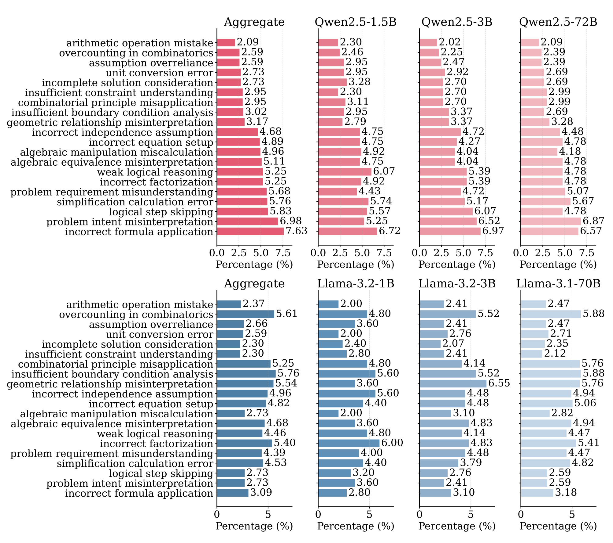
Figure 2 是 static 方案能成立的主要直观证据。上半部将 Qwen 弱模型聚合分布、Qwen2.5-1.5B、3B 与目标 Qwen2.5-72B 并列；下半部对 Llama 做同样对照。横轴是失败类型在错误中的百分比，纵轴列出错误公式应用、题意误解、逻辑步骤跳过等前 20 类模式。关键不是每个柱的绝对高度完全一致，而是家族内高频类别的排序和量级大体稳定，聚合弱模型比任何单一弱模型更接近强模型。同时两个家族的高频排列并不完全相同，这预示了“同家族转移更强”的实验结果。因此这张图支持的是经验可转移性，不是已经证明共享某个内部机制的因果结论。还要注意，百分比是在各模型自身的错误集合内归一化；图中相似意味着“犯错时错误类型的构成接近”，并不意味着弱、强模型的绝对错误率接近。static 借用的正是前一种条件分布，而不是把小模型准确率外推给大模型。
3. 实验结果
3.1 主设置与 Qwen 家族结果
主实验在数学推理上展开。CritBank 使用 GSM8K 的约 7.4k 训练样本和 MATH 的 7.5k 训练样本，合计约 15k 问题；评估用两个测试集的完整数据，并以 AMC23、AIME24 和 AIME25 检查竞赛级 OOD 泛化。Qwen 侧由 Qwen2.5-1.5B、3B 和 7B 贡献弱模型错误，目标模型是 32B 和 72B；Llama 侧由 1B、3B 和 8B 构建库，目标是 70B。除自一致基线外，实验使用 temperature 0 的贪心解码。对比面覆盖 zero-shot、随机/固定 1/3/5-shot、Consistency@3/5/7、Self-Reflection 和使用 GPT-4o-mini 的 LLM-as-Judge。
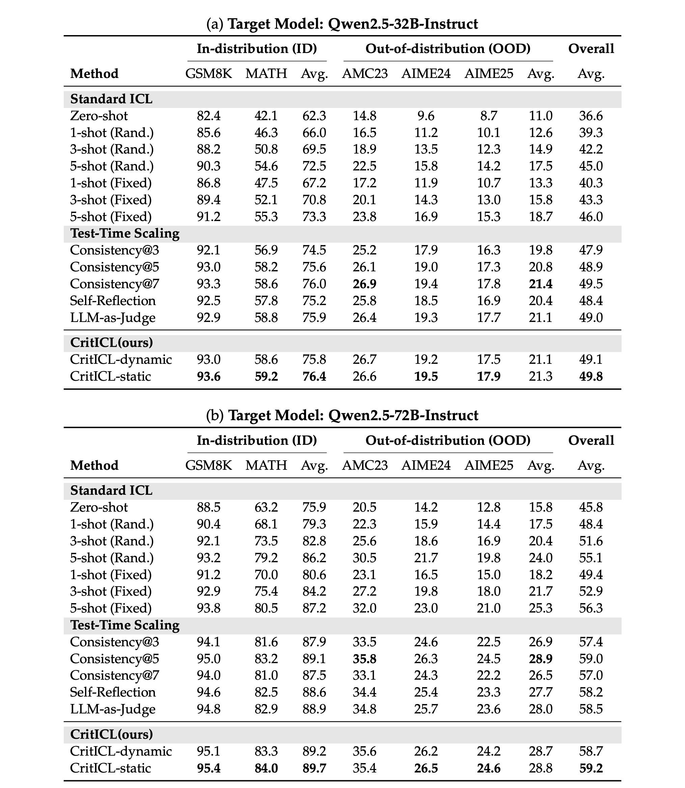
Table 1 需要分尺度读。在 Qwen2.5-32B 上，CritICL-static 的总平均为 49.8，比最强的 Consistency@7 高 0.3 个百分点；dynamic 的 49.1 低于 Consistency@7，但接近其他推理时扩展方法。在 Qwen2.5-72B 上，static 总平均 59.2，高于 Consistency@5 的 59.0；dynamic 为 58.7。但该表也提醒我们不要用“全面击败”描述结果：72B 的 AMC23 上，Consistency@5 是 35.8，高于 static 的 35.4；32B 的 AMC23 上，Consistency@7 也以 26.9 高于 static 的 26.6。CritICL 的主优势是以少得多的生成达到竞争性或略优的平均值，而不是每个数据集都取得最高点估计。相比随机 5-shot，static 在 72B 的 MATH 从 79.2 提到 84.0，这种差值比与最强重复采样的微小差值更能体现 failure-aware 示例的价值。
3.2 成本：一次离线建库如何换取更少在线生成
论文将每题成本拆成生成次数、输入 token、输出 token 和二者之和。这个口径把 dynamic 的失败模式预测、judge 的候选评审等辅助调用都计入，因而比只数“最终答案”更公平。但它仍只是在线摊销前的每题 token，不包含 CritBank 采集与标注的一次性成本。
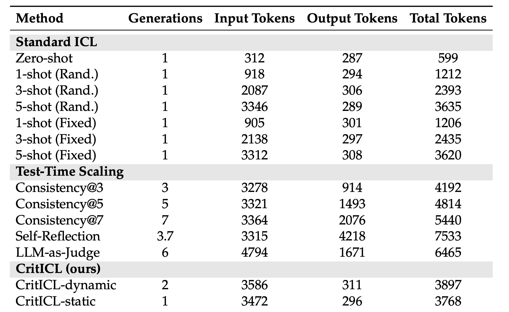
Table 2 展示了“输入变长，输出和生成次数变少”的取舍。标准 5-shot 随机 ICL 每题平均 3346 个输入 token、289 个输出 token，总计 3635；CritICL-static 是 3472+296=3768，比它略贵，这说明 CritICL 的效率卖点不是“比所有 ICL 更省 token”。它的真正对手是多次生成的推理时扩展：Consistency@5 总 token 是 4814，Consistency@7 是 5440，Self-Reflection 是 7533，LLM-as-Judge 是 6465。static 只做一次目标生成，dynamic 因为要先预测失败模式，用两次生成和 3897 个总 token。附录中 Qwen2.5-72B 的 static/dynamic 总 token 为 3928/4065，Llama-3.1-70B 在 MATH 上为 3551/3687，趋势与主表一致。因此方法更适合 CritBank 可被大量请求复用的高吞吐场景；请求量很小或域频繁变化时，离线建库是否能摊销需要另算。
3.3 失败模式对齐是不是真正的增益来源
第一组消融将 CritICL 的检索替换为随机样例、全部输入共享的固定样例，以及按题目 embedding 相似度选例。如果只要加入更多示例就有效，这些替代策略应当与 CritICL 接近；如果表面语义相似能代替失败类型，semantic retrieval 至少应当显著追上。
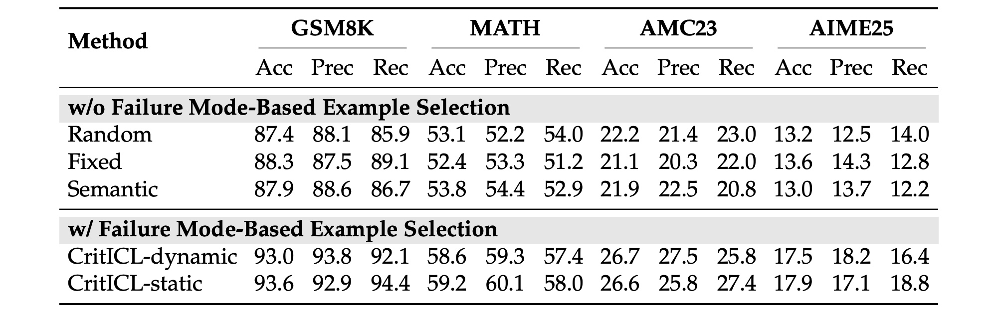
Table 3 的四个数据集都使用 5-shot，因而样例数量不是干扰变量。在 GSM8K 上，random/fixed/semantic 的准确率为 87.4/88.3/87.9，dynamic/static 为 93.0/93.6；MATH 上前三者仅 52.4-53.8，后两者达 58.6/59.2。更难的 AMC23 和 AIME25 上也有约 4-6 个百分点差距。准确率、精确率和召回率同向改善，不像是某一单独指标的摇摆。这组证据支持“错误机制相似比题面相似更适合选择评论示例”，但它也受限于作者定义的 taxonomy 和数学任务：换一个域后能否稳定分出同等质量的错误类型，仍需额外验证。
失败分布的可转移性还需要超越 Figure 2 的目测相似。论文使用 Spearman 和 Kendall $\tau$ 检查高频类别排名，Top-10 overlap 检查主导类别重合，Jensen-Shannon 距离比较完整概率分布。前三项越大越好，JS 距离越小越好。
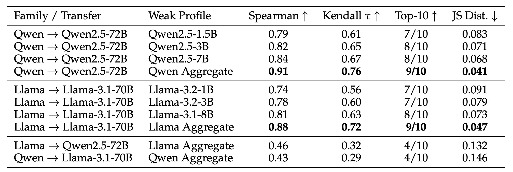
Table 4 将“聚合多个弱模型”和“限定同家族”两个设计绑定到数值。Qwen 聚合 profile 对 Qwen2.5-72B 的 Spearman/Kendall 为 0.91/0.76，Top-10 重合 9/10，JS 距离 0.041，均优于 1.5B、3B 或 7B 单模型；Llama 聚合 profile 对 Llama-3.1-70B 为 0.88/0.72、9/10 和 0.047，也优于任一单模型。但 Llama 聚合 profile 转向 Qwen 时 Spearman 只有 0.46、JS 距离升至 0.132；Qwen 转 Llama 更低至 0.43 和 0.146。所以 static 方法并非发现了一个通用不变的错误分布，而是发现同家族中足以支持检索的相对稳定性。
为排除“只是多放了一段由 GPT 产生的知识”，作者又设计了增益来源消融：用正确样例做稠密检索，只放不指向特定失败类型的通用 GPT critique，只放弱模型错误回答，或故意打乱失败标签与评论的对应关系。
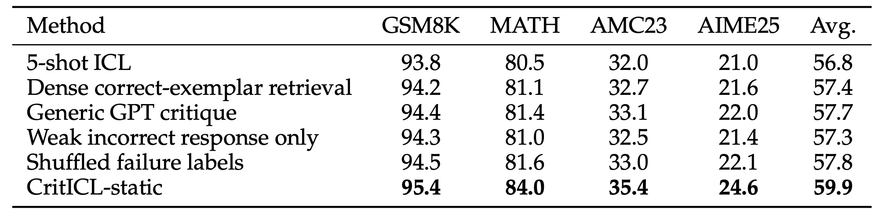
Table 7 中，5-shot ICL 的四任务平均为 56.8，稠密正确样例检索升至 57.4，通用 GPT critique 为 57.7，只放弱错误回答为 57.3，乱序失败标签为 57.8，完整 CritICL-static 达 59.9。这意味着 retrieval、critique 文本和错误案例各自都可以贡献一部分改善，但只有将失败模式与对应 critique 正确对齐才得到完整差距。特别是乱序标签低于完整方法 2.1 个百分点，支持了“针对性”而非“更多文本”的解释。不过这仍是模型-任务组合上的实验消融，没有证明 critique 的每个句子都对因果机制必要。
最后，论文把 CritICL-static 与另一推理时弱到强方法 W2S-AlignTree、自一致和 AdaptMI 风格检索放在匹配设置下，以避免只和较弱的随机 ICL 比较。
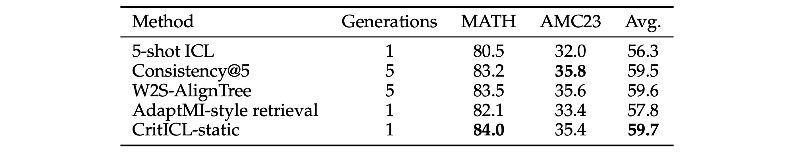
Table 8 中，CritICL-static 在 MATH/AMC23 的平均分为 59.7，略高于 W2S-AlignTree 的 59.6 和 Consistency@5 的 59.5，但 AMC23 单项上 static 的 35.4 低于两个五次生成基线的 35.6/35.8。关键差异是 CritICL-static 只有 1 次目标生成，另两者都是 5 次。AdaptMI 风格检索同样为一次生成，但平均分仅 57.8，这说明“单次生成+检索”还不足以复制效果。应当正确表述的结论是：在该两个数学任务上，static 以更少 target-model generation 达到了接近或略高的平均准确率，而不是对每个任务、每个弱到强系统都已证明统治性优势。
3.4 显著性、家族边界与数学之外的泛化
由于主实验对多数方法采用 temperature 0 贪心解码，同一输入重复跑并不能给出有意义的解码方差。作者因此对评测样本做 bootstrap，报告 95% 置信区间与对最强基线的配对显著性检验。这一分析非常重要，因为主表中与最强基线的差值常只有几个小数点。
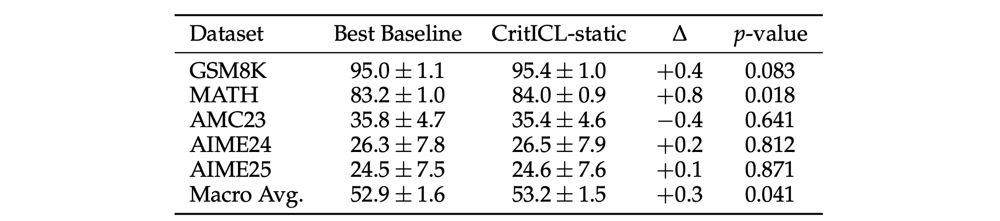
Table 9 迫使对结果采用更克制的解读。MATH 的提升是 +0.8 个百分点，$p=0.018$，达到常用 0.05 阈值；宏平均提升 +0.3，$p=0.041$，也达阈值。GSM8K 的 +0.4 对应 $p=0.083$，未达阈值；AMC23 甚至是 -0.4，$p=0.641$；AIME24/25 为 +0.2/+0.1，$p$ 值 0.812/0.871。AIME 的置信区间约为 $\pm7.5$ 到 $\pm7.9$，明显受小样本集影响。因此，论文最稳固的证据是 MATH 和总体聚合的改善；对 GSM8K 可以说有正向点估计，但不应声称已确证；对 AMC/AIME 的几个小数点差异更应避免强结论。
跨家族实验进一步检查 Table 4 暴露的边界：用弱 Llama 构建 CritBank 去引导 Qwen2.5-72B，以及反向用弱 Qwen 去引导 Llama-3.1-70B。这是两个方向的对称对照，不只是选一个有利方向。
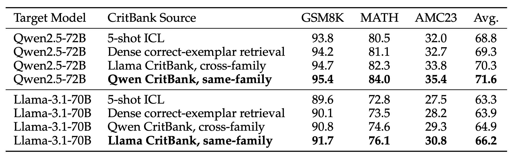
Table 10 显示跨家族并非完全无效：Qwen2.5-72B 的平均分从 5-shot ICL 的 68.8、正确样例检索的 69.3，上升到 Llama CritBank 的 70.3；Llama-3.1-70B 从 63.3/63.9 上升到 Qwen CritBank 的 64.9。但换成同家族库后，两个目标模型分别达 71.6 和 66.2，明显更高。这与分布相关度的家族差异一致：通用错误如漏约束、跳步骤可以跨家族迁移，但一部分错误结构受模型架构、tokenizer、预训练和指令微调管线的共同偏置影响。论文对后一点只给出合理假说，未提供内部机制的因果分解。
家族内复现不能只看上表中的三个数据集，附录还将 Llama-3.1-70B 放回与 Qwen 主表相同的五个数学基准和基线系中。
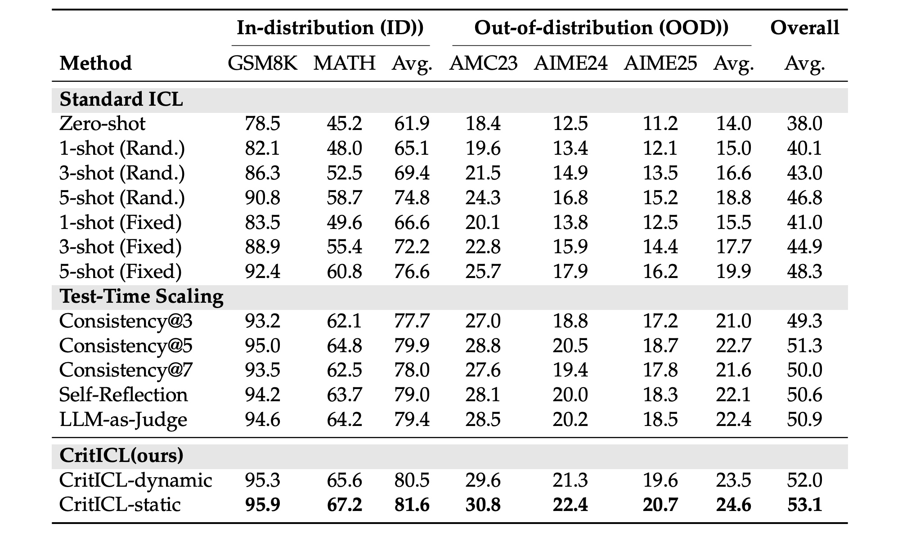
Table 12 中，CritICL-static 的总平均为 53.1，dynamic 为 52.0，均高于最强基线 Consistency@5 的 51.3；static 在 ID 两任务平均 81.6，OOD 三任务平均 24.6，对比 Consistency@5 的 79.9 和 22.7 都有提高。与 Qwen 主表不同，此处 static 在五个单项都是表中最高。这支持“家族内失败知识的利用并不只对 Qwen 有效”，但它仍然只覆盖 Qwen 和 Llama 两个开源家族，不足以对任意架构、任意对齐管线做广泛宣称。而且 Llama 表的很多差值仍缺少独立显著性检验，需要复现时重新统计。
最后，作者将评估从数学扩展到 GPQA 的化学、生物、物理和量子力学。目标仍是 Llama-3.1-70B，CritBank 由更弱的 Llama 构建。这一设置能检查“学会避错”是否只有效于算术和代数，还是可迁移到知识密集的科学概念推理。
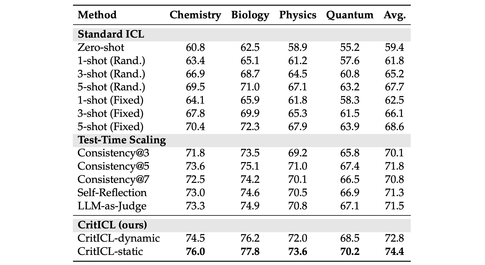
Table 16 中，CritICL-static 在化学/生物/物理/量子力学上分别为 76.0/77.8/73.6/70.2，平均 74.4；dynamic 平均 72.8。最强重复采样基线 Consistency@5 平均为 71.8，LLM-as-Judge 为 71.5，5-shot fixed ICL 为 68.6。static 在四个子域上都高于表中基线，这比只报一个平均值更有说服力。附录跨域库分析还表明，数学目标上数学/混合/GPQA CritBank 平均为 59.7/59.5/58.4，GPQA 目标上 GPQA/混合/数学库为 74.4/74.1/72.6：跨域有用，但域内或混合库更强。仍需注意，GPQA 只是第二个推理域，没有覆盖对话、长文档、代码、工具调用或真实线上交互。
4. 总结
4.1 我的判断
CritICL 最值得保留的思想，是把“弱模型的错误”从一次性废料转换成可查询的结构化资产。方法的三个部件环环相扣：CritBank 将错误回答与失败标签、自然语言评论绑定；检索按失败标签交集计分并优先覆盖新风险；dynamic/static 用输入级预测或家族级频率分布产生检索目标。实验中，这个结构不仅优于随机/固定/语义检索，也在打乱标签时明显变差，因而“对齐失败类型”得到了比“多放上下文”更强的证据。
但结论应该定位为一种效率-准确率替代，而不是对 test-time scaling 的普遍取代。CritICL-static 将每题多次生成换成可复用的离线库，适合模型家族和任务域稳定、请求量大的场景；dynamic 为问题特定风险多付一次预测，适合通用 profile 过粗的输入。MATH 与宏平均的显著性支持其主线，但 AMC/AIME 的微小差值并不稳固。因此工程实施上应同时记录准确率、尾延迟、输入/输出 token、CritBank 创建与刷新成本，而不能只比较单次回答的总 token。
4.2 工程启发与复现路径
对大模型系统，可先复现 static 版：它只需离线统计家族 profile，在线端没有额外风险预测，容易与 5-shot ICL、Consistency@5 做同口径 A/B。复现应分成四层检查：先验证弱/强模型失败分布的排名相关；再比较随机、语义和失败模式检索；然后打乱标签、去掉 critique、换正确样例隔离增益来源；最后报告 bootstrap 不确定性和包含离线建库的摊销成本。对推荐系统，一个可操作的对照是将误判日志聚类为“长短期兴趣冲突”、“稀疏类目冷启动”、“用户负反馈未生效”等类型，再检查按错误类型召回的反例是否比按 item 相似度召回更能改善排序。这一迁移需自行实验，不是本论文已验证结论。
4.3 局限、风险与后续跟进
第一，证据主体仍是数学推理，GPQA 虽扩展到科学域，但两者都是可离线判定答案的知识/推理基准，不等于对长对话、Agent、RAG 或线上个性化已经有效。第二，同家族失败分布是方法强假设，表 4/10 显示跨家族可迁移但明显变弱；当模型经历新的指令微调、工具增强或 tokenizer 变更时，旧 profile 可能迅速过期。第三，CritBank 依赖 GPT-4o-mini 产生标签与 critique，虽然附录 300 个样本的独立 LLM 标注与 100 个人类样本显示 F1 约 0.81-0.84、$\kappa$ 约 0.73-0.77，但这不是完全一致，标注偏差会沿检索链放大。第四，成本表强调在线 token，却没有给出 CritBank 创建的总 GPU/货币成本、刷新周期和请求量临界点，因而“更高效”的经济结论受使用规模影响。第五，论文评估主要是准确率，尚未系统量化 critique 是否引入新的提示注入、偏见放大或错误负迁移。
后续最值得跟进的三类工作是：其一，在官方仓库复现 Qwen 主表和来源增益消融，重点核对失败标签聚类、top-$K$ 去冗余和各 baseline 的 prompt/token 口径；其二，在新模型家族、不同对齐版本和时间漂移下重新测量 $P_{\mathcal{M}}(l)$，建立 profile 失效的刷新阈值；其三，将离线建库成本与每题在线节省合并成总拥有成本曲线，确定 static 在不同请求量、不同库刷新周期下的真正收支平衡点。只有这三组验证都通过，CritICL 才能从一个有力的离线研究原型走向稳定的生产推理组件。